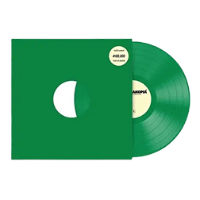
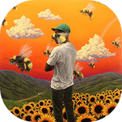
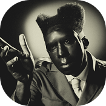

About
American rapper, record producer, songwriter and video director, Tyler Gregory Okonma, also known as “Tyler, The Creator” is the co-founder of the flourishing hip-hop collective ‘Odd Future Wolf Gang Kill Them All’. He began his career by uploading songs on ‘Tumblr’ that quickly went viral and grabbed mass attention. Tyler self-produced his first mixtape ‘Bastard’ and soon followed it up with his debut album ‘Goblin’. Though he had a distressing childhood, he managed to find solace in composing original music from a young age. Most of his songs continue to reflect verses of his adverse past. He has performed in top television shows such as ‘Late Night with Jimmy Fallon’, ‘The Mindy Project’ and ‘Jimmy Kimmel Live’. He also hosts the annual ‘Camp Flog Gnaw’ carnival at the Exposition Park in Los Angeles; the event attracts music lovers from all over the globe. He has had the opportunity of working with mega recording brands such as ‘XL Recordings’, ‘Sony Music Entertainment’ and ‘RED Distribution’. He recently joined the garment industry by founding his own clothing company called ‘Golf Wang’. Tyler has won several accolades for his distinctive contribution as an artist and performer.
Latest Release
Chromakopia
Top Hits
See You Again
Tyler, The Creator ft. Kali Uchis
Like Him
Tyler, The Creator ft. Lola Young
Sticky
Tyler, The Creator ft. GlorRilla, Sexyy Red & Lil Wayne